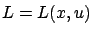

The reader may find it somewhat discouraging that even for simple examples like the ones we just presented, solving the HJB equation analytically is a challenging task. Nevertheless, the HJB equation gives a considerable insight into the problem, and one can often apply numerical techniques to obtain approximate solutions. We now discuss one important situation in which the HJB equation takes a simpler form.
Suppose that both the control system and the cost functional are time-invariant, i.e.,  and
and

, and that there is no terminal cost (
The PDE (5.19) may still be difficult to solve, but it is certainly more tractable than the general HJB equation (5.10). In the special case when  is scalar, (5.19) is actually an ODE. Let us consider the infinite-horizon version of Example 5.1. The HJB equation
becomes
is scalar, (5.19) is actually an ODE. Let us consider the infinite-horizon version of Example 5.1. The HJB equation
becomes
 from which we derive
from which we derive
 . We must choose the plus sign because
. We must choose the plus sign because  should be positive definite (since
should be positive definite (since  is positive definite). We do not even need to solve for
is positive definite). We do not even need to solve for  because the optimal feedback law is obtained from
because the optimal feedback law is obtained from  directly:
directly:
 .
.